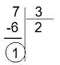

Épreuve écrite#
Exercice 1#
Informations
Code de l’épreuve:
22-NSIJ1G11Exercice : 1
Thèmes : listes, p-uplet, dictionnaires
On dispose de la liste jours suivante et du dictionnaire mois suivant :
jours=["dimanche", "lundi", "mardi", "mercredi", "jeudi", "vendredi", "samedi"]
mois={1 :("janvier",31) , 2 :("février",28) , 3 :("mars",31), 4 :("avril",30) ,\
5 :("mai",31) , 6 :("juin",30) , 7 :("juillet",31) , 8 :("aout",31) , \
9 :("septembre",30) , 10 :("octobre",31) , 11 :("novembre",30) , 12 :("décembre",31)}
A partir de la liste jours, comment obtenir l’élément « lundi » ?
On rappelle que l’opérateur % (« modulo ») renvoie le reste de la division entière (division euclidienne).
Exemple
\(7\%3\) renvoie 1 qui est le reste de la division de 7 par 3.
Que renvoie l’instruction
jours[18%7]?
On rappelle que
jours.index[element]renvoie l’indice deelementdans la liste jours. Par exemplejours.index["mercredi"]renvoie 3.Le nom du jour actuel est stocké dans une variable j (par exemple : j = « mardi »). Recopier et compléter l’instruction suivante permettant d’obtenir le numéro du jour de la semaine n jours plus tard :
numero_jour =(jours.index[ … ] + … )% …
A partir du dictionnaire mois, comment obtenir le nombre de jours du mois de mars ?
Le numéro du mois actuel est stocké dans une variable numero_mois, écrire le code permettant d’obtenir le nom du mois qu’il sera x mois plus tard à partir du dictionnaire mois. Par exemple :
si
numero_mois = 4etx = 5, on doit obtenir « septembre »si
numero_mois = 10etx = 3, on doit obtenir « janvier »
On définit une date comme un tuple :
(nom_jour,numero_jour, numero_mois,annee).Sachant que
date = ("samedi", 21, 10, 1995), que renvoiemois[date[2]][1]?Ecrire une fonction
jour_suivant(date)qui prend en paramètre une date sous forme de tuple et qui renvoie un tuple désignant la date du lendemain. Par exemple :>>> jour_suivant( ("samedi", 21, 10, 1995) ) renvoie ("dimanche", 22, 10, 1995) >>> jour_suivant( ("mardi", 31, 10, 1995) ) renvoie ("mercredi", 1, 11, 1995)
On ne tient pas compte des années bissextiles et on considère que le mois de février comporte toujours 28 jours.
Exercice 2#
Informations
Code de l’épreuve:
22-NSIJ1G11Exercice : 3
Thèmes : systèmes d’exploitation, dictionnaires
Afin d’organiser les dossiers et les fichiers sur un disque dur, une structure arborescente est utilisée. Les fichiers sont dans des dossiers qui sont eux-mêmes dans d’autres dossiers, etc.
Dans une arborescence, chaque dossier peut contenir des fichiers et des dossiers, qui sont identifiés par leur nom. Le contenu d’un dossier est modélisé par la structure de données dictionnaire. Les clés de ce dictionnaire sont des chaînes de caractères donnant le nom des fichiers et des dossiers contenus.
Exemple
Le dossier appelé Téléchargements contient deux fichiers rapport.pdf et jingle.mp3, et un dossier Images contenant simplement le fichier logo.png. Il est représenté ci-dessous.
Ce dossier Téléchargements est modélisé en Python par le dictionnaire suivant :
{"Images": {"logo.png": 36}, "rapport.pdf": 450, "jingle.mp3": 4800}
Les valeurs numériques sont exprimées en ko (kilo-octets).
"logo.png": 36 signifie que le fichier logo.png occupe un espace mémoire de 36ko sur le disque dur.
On rappelle, ci-dessous, quelques commandes sur l’utilisation d’un dictionnaire :
dico = {} crée un dictionnaire vide appelé dico,
dico[cle] = contenu met la valeur contenu pour la clé cle dans le dictionnaire dico,
dico[cle] renvoie la valeur associée à la clé cle dans le dictionnaire dico,
cle in dico renvoie un booléen indiquant si la clé cle est présente dans le dictionnaire dico,
del dico[cle] supprime la clé cle et sa valeur associée du dico.
dico.keys() renvoie la liste des clés du dictionnaire dico
L’adresse d’un fichier ou d’un dossier correspond au nom de tous les dossiers à parcourir depuis la racine afin d’accéder au fichier ou au dossier. Cette adresse est modélisée en Python par la liste des noms de dossier à parcourir pour y accéder.
Exemple : L’adresse du dossier : /home/pierre/Documents/ est modélisée par la liste ["home", "pierre", "Documents"].
Dessiner l’arbre donné par le dictionnaire suivant, qui correspond au dossier
Documents.Documents = { "Administratif":{ "certificat JDC.pdf ": 1500, "attestation recensement.pdf ": 850 }, "Cours": { "NSI": { "TP.html ": 60, "dm.odt": 345 }, "Philo": { "Tractatus logico-philosophicus.epub": 2600 } }, "liste de courses.txt ": 24 }
On donne la fonction Parcourir suivante qui prend en paramètres un dossier racine et une liste représentant une adresse, et qui renvoie le contenu du dossier cible correspondant à l’adresse.
Exemple : Si la variable
Documentscontient le dictionnaire de l’exemple de la question 1 alorsParcourir(Documents, ["Cours", "Philo"])renvoie le dictionnaire{"Tractatus logicophilosophicus.epub": 2600}.Recopier et compléter la ligne 4:
def Parcourir(racine, adr): dossier = racine for nom_dossier in adr: dossier = # A compléter return dossier
Soit la fonction suivante :
def Afficher(racine, adr, nom_fichier): dossier = Parcourir(racine, adr) print(dossier[nom_fichier])
Qu’affiche l’instruction
Afficher(Documents, ["Cours", "NSI"],"TP.html")sachant que la variable Documents contient le dictionnaire de la question 1 ?
La fonction
Ajouter(racine, adr, nom_fichier, taille)suivante ajoute au dictionnaireracine, à l’adresseadr, la clé nom_fichier associé à la valeur taille.Une ligne de la fonction donnée ci-dessous contient une erreur. Laquelle ? Proposer une correction.
def Ajouter_fichier(racine, adr, nom_fichier, taille): dossier = Parcourir(racine, adr) taille = dossier[nom_fichier]
Ecrire une fonction
Ajouter_dossier(racine, adr, nom_dossier)pour créer un dictionnaire représentant un dossier vide appelénom_dossierdans le dictionnaire racine à l’adresseadr.
Ecrire une fonction
taille(dossier)qui prend en paramètre un dictionnairedossiermodélisant le contenu du répertoire dossier et qui renvoie le total de l’espace mémoire occupé par les fichiers contenus dans le dossier. On considère que le répertoire dossier ne contient que des fichiers et aucun sous-dossier.
Exercice 3#
Informations
Code de l’épreuve:
21-NSIJ2ME3Exercice : 2
Thèmes : tableaux, dictionnaires
Les Aventuriers du Rail© est un jeu de société dans lequel les joueurs doivent construire des lignes de chemin de fer entre différentes villes d’un pays.
La carte des liaisons possibles dans la région Occitanie est donnée ci-dessous:
Sur la seconde figure, les liaisons possédées par le joueur 1 sont en noir, et celles du joueur 2 en blanc. Les liaisons en gris sont encore en jeu.
Codages des structures de données utilisées :
Liste des liaisons d’un joueur : Toutes les liaisons directes (sans ville intermédiaire) construites par un joueur seront enregistrées dans une variable de type « tableau de tableaux ».
Avertissement
Seules les liaisons directes existent, par exemple [« Toulouse », »Muret »] ou [« Muret », »Toulouse »]. Par contre, le tableau [« Toulouse », »Mazamet »] n’existe pas, puisque la ligne Toulouse-Mazamet passe par Castres.
Le joueur 1 possède les lignes directes « Toulouse-Muret », « Toulouse-Montauban », « Gaillac-St Sulpice » et « Muret-Pamiers » (liaisons indiquées en noir sur la figure ci-dessus). Ces liaisons sont mémorisées dans la variable ci-après.
liaisonsJoueur1 = [ ["Toulouse","Muret"], ["Toulouse","Montauban"], ["Gaillac","St Sulpice"], ["Muret","Pamiers"] ]
Dictionnaire associé à un joueur : On code la liste des villes et des trajets possédée par un joueur en utilisant un dictionnaire de tableaux. Chaque clef de ce dictionnaire est une ville de départ, et chaque valeur est un tableau contenant les villes d’arrivée possibles en fonction des liaisons possédées par le joueur.
Le dictionnaire de tableaux du joueur 1 est donné ci-après :
DictJoueur1 = { "Toulouse":["Muret","Montauban"], "Montauban":["Toulouse"], "Gaillac":["St Sulpice"], "St Sulpice":["Gaillac"], "Muret":["Toulouse","Pamiers"], "Pamiers":["Muret"] }
Expliquer pourquoi la liste des liaisons suivante n’est pas valide :
tableauliaisons = [["Toulouse","Auch"], ["Luchon","Muret"],["Quillan","Limoux"] ]Cette question concerne le joueur n°2 (Rappel : les liaisons possédées par le joueur n°2 sont représentées par un rectangle blanc).
Donner le tableau liaisonsJoueur2, des liaisons possédées par le joueur n°2.
Recopier et compléter le dictionnaire suivant, associé au joueur n°2 :
DictJoueur2 = {"Toulouse":["Castres","Castelnaudary"],…}.
À partir du tableau de tableaux contenant les liaisons d’un joueur, on souhaite construire le dictionnaire correspondant au joueur. Une première proposition a abouti à la fonction construireDict ci-dessous.
Écrire sur votre copie un assert dans la fonction construireDict qui permet de vérifier que la listeLiaisons n’est pas vide.
Sur votre copie, donner le résultat de cette fonction ayant comme argument la variable liaisonsJoueur1 donnée dans l’énoncé et expliquer en quoi cette fonction ne répond que partiellement à la demande.
La fonction
construireDict, définie ci-dessus, est donc partiellement inexacte. Compléter la fonction construireDict pour qu’elle génère bien l’ensemble du dictionnaire de tableaux correspondant à la liste de liaisons données en argument. À l’aide des numéros de lignes, on précisera où est inséré ce code.
Exercice 4#
Informations
Code de l’épreuve:
22-NSIJ2G11Exercice : 2
Thèmes : structures de données, dictionnaires
La cryptographie est un ensemble de techniques permettant de chiffrer un message. Une technique de cryptographie consiste à mélanger les lettres d’un alphabet et à réécrire le message avec ces permutations. En Python, on peut créer un dictionnaire dans lequel les clés sont les lettres de l’alphabet et les valeurs sont celles de l’alphabet mélangé.
Exemple
Si l’alphabet contient les 4 lettres A, B, C et D, et si le dictionnaire de l’alphabet mélangé est alpha ={"A": "B", "B": "D", "C": "A", "D": "C"}, la chaîne de caractères "BAC" sera chiffrée "DBA".
Un tel dictionnaire sera appelé dictionnaire de chiffrement.
On souhaite chiffrer un message écrit avec l’alphabet A, B, C, D, E, F, G à l’aide du dictionnaire
alpha ={"A":"B", "B":"D", "C":"A", "D":"C", "E":"F", "F":"G", "G":"E"}.Quelle est la valeur associée à la clé
"D"? En Python, comment l’obtenir ?Chiffrer la chaîne de caractères
"BAGAGE"avec le dictionnairealpha.
On considère qu’un mot est une chaîne de caractères (un objet de type str) écrite uniquement avec les 26 lettres de l’alphabet en majuscule. Par exemple,
"ARBRE"est un mot et"L’ARBRE !"n’est pas un mot à cause des caractères : « ’ », « « (espace) et « ! ».Écrire une fonction
chiffrer(mot, alpha)qui prend en paramètresmotun mot etalphaun dictionnaire de chiffrement, et qui renvoie une chaîne de caractères chiffrée avec le dictionnaire de chiffrementalpha.On souhaite déchiffrer un mot chiffré avec cette méthode.
Si un mot est chiffré avec le dictionnaire de chiffrement
alpha ={"A":"B", "B":"D", "C":"A", "D":"C", "E":"F", "F":"G", "G":"E"}, donner un dictionnaire permettant de le déchiffrer.Ecrire une fonction en Python appelée
dico_dechiffrement(dico)qui prend en paramètre dico un dictionnaire de chiffrement et qui renvoie un dictionnaire permettant le déchiffrement. On pourra s’inspirer du code incomplet ci-dessous ou proposer une autre solution :
Ecrire une fonction
dechiffre(mot, dico)qui reçoit un mot chiffré et un dictionnaire de chiffrement et renvoie le mot décodé. On utilisera les fonctions écrites dans les questions précédentes.
On souhaite à présent créer un dictionnaire de chiffrement. Écrire une fonction
dico_chiffrement(alphabet)qui prend en paramètre alphabet un tableau de lettres et qui renvoie un dictionnaire de chiffrement dont les clés sont les lettres du tableau alphabet et les valeurs sont les lettres du tableau alphabet mélangées.On pourra utiliser la fonction
shuffledu modulerandomqui mélange en place un tableau.Par exemple, on a :
>>> tab = ["A", "B", "C", "D"] >>> shuffle(tab) >>> tab ["B", "A", "D", "C"]